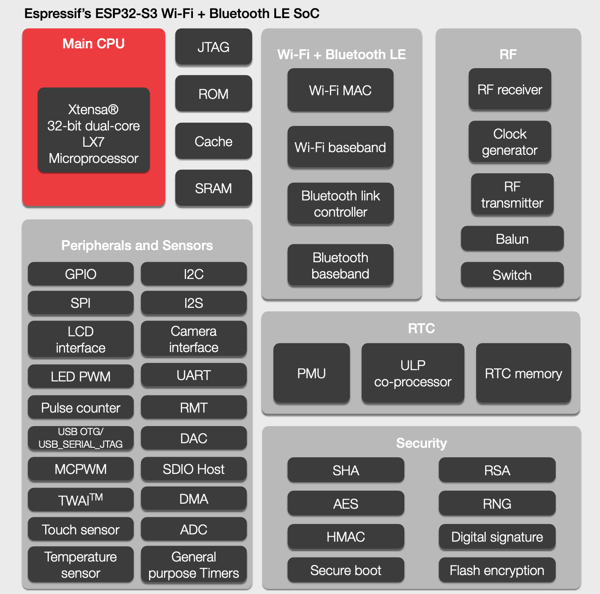

Centro de Informática · UFPE
Conhecendo afamília ESP32
Do silício à bancada: como esses microcontroladores funcionam por dentro, o que cada série faz e não faz, e como escolher o chip certo antes de fechar um projeto.
linkedin.com/in/lucasrguerra
O que vamos fazer hoje
Três horas divididas em entender, decidir e montar.
O que existe dentro do chip, como ele acorda e por que ele não é um Arduino com Wi-Fi.
CAPÍTULOS 1 A 3
As doze séries, o que cada uma resolve, como ela se compara a outras plataformas e como escolher a sua.
CAPÍTULOS 4 A 8
Um DHT11 ligado a um ESP32-S3, lendo temperatura e umidade no monitor serial. Cada pessoa na sua bancada.
CAPÍTULO 9
Antes de começar
Você precisa saber
- Já ter ligado um LED em algum microcontrolador.
- Saber o que é uma porta digital.
- C ou C++ básico ajuda, mas o código de hoje é curto e comentado.
Wi-Fi, RTOS, RISC-V ou criptografia. Tudo isso aparece explicado no caminho.
Na sua bancada
| ESP32-S3-DevKitC-1 | Qualquer variante serve |
| Sensor DHT11 | O componente azul de 4 pinos |
| Resistor 10 kΩ | Marrom, preto, laranja |
| Protoboard | Meia protoboard basta |
| 4 jumpers | Vermelho, preto e amarelo |
| Cabo USB | De dados, não só de carga |
O que é o ESP32
De onde ele veio e por que virou padrão de fato em projetos conectados.
Onze anos em uma tabela
A Espressif é de 2008, mas a história que interessa começa em 2014.
| Ano | Lançamento | O que mudou |
|---|---|---|
| 2014 | ESP8266 | Wi-Fi barato ao alcance de qualquer projeto. Ainda muito usado. |
| 2016 | ESP32 | Dois núcleos, Bluetooth e periféricos de verdade. O marco da plataforma. |
| 2019 | ESP32-S2 | Foco em segurança e USB nativo; abre mão do Bluetooth. |
| 2020 | ESP32-C3 | Primeira série RISC-V. Marca a virada de arquitetura da empresa. |
| 2021 | ESP32-S3 | Dois núcleos com instruções vetoriais para IA. Vira o carro-chefe. |
| 2022 | ESP32-C6, H2 | Chega o rádio 802.15.4: Zigbee, Thread e Matter entram na família. |
| 2023 | ESP32-P4 | Alto desempenho sem rádio, com MIPI para câmera e display. |
| 2024–25 | C5, C61, H4, S31 | Wi-Fi 6, dual-band de 5 GHz e a geração seguinte de malha. |
Antes do ESP8266, colocar um projeto na internet custava
um microcontrolador mais um módulo de rede.
Depois dele, custa um chip só.
Some a isso documentação pública, framework aberto e versionado, e um preço que cabe no bolso de estudante. É essa combinação, e não um recurso isolado, que explica por que o ESP32 aparece em quase toda frente da LASER: IoT, automação, IA na borda, robótica.
Quatro palavras que não são sinônimos
Trocar uma pela outra causa confusão em compra, em homologação e em projeto.
O chip nu. É o silício, e sozinho ele não faz nada: precisa de flash, cristal, antena e alimentação.
O SoC já montado com flash, cristal, antena e blindagem. É o que tem certificação. ESP32-S3-WROOM-1.
O módulo numa PCI com USB, regulador e barra de pinos. É o que você compra para prototipar. ESP32-S3-DevKitC-1.
A geração do silício, que define recursos e limitações. ESP32-S3.

Por que essa distinção custa dinheiro
Quem projeta produto para vender usa módulo, não SoC nu. As certificações de rádio (Anatel aqui, FCC e CE lá fora) são emitidas para o módulo com sua antena e sua blindagem. Desenhar a própria placa com o chip nu significa refazer toda a homologação por conta própria.
Anatomia: o que existe dentro do chip
Cinco blocos que explicam quase todo comportamento estranho que você vai encontrar.
O ESP32-S3 por dentro

Processador: Xtensa ou RISC-V
Arquitetura licenciada da Cadence, usada nas séries mais antigas e nas de maior desempenho: ESP32, S2 e S3.
Conjunto de instruções aberto e sem royalties. Todas as séries novas nasceram assim. É a direção da empresa.
A diferença é praticamente invisível: o compilador cuida disso. Ela pesa em depuração de baixo nível e em código em assembly.
Um ou dois núcleos
Dois núcleos permitem separar o que não pode parar do que pode esperar: o rádio de um lado, a sua lógica do outro. Mas exigem cuidado com acesso concorrente à mesma variável.
O coprocessador de baixo consumo
O ULP (ou LP core nas séries novas) fica no domínio de energia sempre ligado. Ele acorda, lê um sensor, decide se vale a pena e só então acorda o processador principal.
A diferença entre meses e dias de bateria.
Memória: quatro tipos, quatro papéis
| Memória | Para que serve | Ordem de grandeza |
|---|---|---|
| SRAM | Memória de trabalho: variáveis, pilha, buffers. É o recurso que acaba primeiro em projetos com Wi-Fi — a pilha de rede sozinha come dezenas de KB. | 272 KB a 768 KB |
| ROM | Gravada de fábrica. Contém o bootloader inicial. Você não altera, e é por isso que um ESP32 é praticamente impossível de "brickar" de forma permanente. | 128 KB a 576 KB |
| Flash externa | Onde mora o seu programa. Fica fora do núcleo do chip e conversa por SPI. | 2 MB a 16 MB |
| PSRAM | RAM extra externa, opcional: buffer de câmera, tela gráfica, áudio, modelo de rede neural. | 2 MB a 32 MB |
A flash é externa ao núcleo: alguns pinos já estão ocupados conversando com ela o tempo todo. No ESP32 original são os GPIO 6 a 11. Ligue um LED ali e o chip trava, porque você está interferindo no barramento de onde o programa está sendo lido.
Rádio: o bloco que muda tudo
É o que distingue o ESP32 da maioria dos microcontroladores. Nem toda série tem todos.
| Tecnologia | Para quê |
|---|---|
| Wi-Fi 4 · 802.11 b/g/n | Conexão direta à internet pela rede local. Presente na maioria das séries. |
| Wi-Fi 6 · 802.11ax | Melhor desempenho em rede congestionada e menor consumo com Target Wake Time. |
| Bluetooth LE | Celular, sensores de baixo consumo, provisionamento de rede. |
| Bluetooth Clássico | Áudio (A2DP) e serial sem fio (SPP). Só no ESP32 e no S31. |
| IEEE 802.15.4 | Base do Zigbee, do Thread e portanto do Matter. |
Transmitir custa corrente, com picos acima de 300 mA, custa memória e custa tempo de processamento.
Guarde esse número. Ele volta no capítulo 7 explicando reinicializações que parecem bug de software.
A matriz de roteamento é ouro
Em um microcontrolador tradicional, a UART2 só existe nos pinos que o fabricante escolheu.
No ESP32, a matriz de roteamento mapeia quase qualquer função para quase qualquer pino, por software.
Você desenha o traçado da placa da forma mais limpa
e depois adapta o firmware. Não o contrário.
Sinais de alta velocidade — o SPI da flash, o USB, o cristal, algumas linhas de I²S e LCD — não passam por ela. Eles usam IO_MUX, um caminho direto disponível só em pinos específicos.
Roteie um SPI rápido por um pino qualquer: funciona, mas a frequência máxima cai.
Num Arduino UNO, os vinte pinos são equivalentes.
Num ESP32, uma parte deles já tem dono.
E usar o pino errado não produz um erro de compilação. Produz uma placa que não liga, um firmware que trava, ou pior: um protótipo que funciona na bancada e falha em campo.
Cinco grupos, cinco formas de quebrar
| Grupo | Como falha | No ESP32-S3 |
|---|---|---|
| Flash e PSRAM | Reinicia em laço ou trava no boot. Não é intermitente e não tem contorno em software. | GPIO 26–32 |
| Strapping | Funciona ligado, mas o que você pendurou ali atrapalha o próximo reset. A placa parece morta. | GPIO 0, 45 e 46 |
| Somente entrada | Silenciosamente. pinMode(OUTPUT) não reclama e o pino não muda de nível. | Nenhum nesta série |
| Gravação e depuração | Você não perde o projeto, perde a capacidade de trabalhar nele: cada gravação exige desconectar o sensor. | 39–44 |
| USB nativo | A porta USB de gravação some do computador. Recuperar exige BOOT + RESET manual. | GPIO 19 e 20 |
Descobrir um pino com restrição depois que a placa já foi fabricada. Antes de fechar o roteamento, abra o datasheet da série e liste os pinos proibidos. Leva vinte minutos e evita uma revisão inteira de PCI.
O mesmo pino, outra série, outro comportamento
Dos 45 GPIOs do ESP32-S3, 18 têm alguma condição. Sobram 27 totalmente livres — entre eles o GPIO12, que usaremos na prática.
No ESP32 clássico, esse mesmo GPIO12 seleciona a tensão da flash durante o reset.
Mesmo número. Comportamento completamente diferente.

Como o chip acorda
Da energia ao seu setup(). Quatro etapas que explicam os botões da placa e metade das mensagens de erro.
A sequência de partida
Energização e reset
O processador fica parado até as tensões estabilizarem. O pino CHIP_EN precisa estar em nível alto — nunca pode flutuar.
Bootloader da ROM
Código de fábrica lê os pinos de strapping e decide: iniciar pela flash, ou entrar em modo de gravação e esperar firmware pela serial.
Bootloader de segundo estágio
Este você gravou. Lê a tabela de partições, escolhe qual imagem executar, verifica assinatura se o Secure Boot estiver ativo e descriptografa se a flash estiver cifrada.
Sua aplicação
No ESP-IDF, app_main(). No Arduino, o core cria uma tarefa que chama setup() e depois loop().
Segurar BOOT, pressionar e soltar RESET, soltar BOOT força o modo de gravação. É o truque manual quando a gravação falha com timeout.
O loop() que você conhece
é, por baixo, uma tarefa do FreeRTOS.
No ESP32 há um sistema operacional de tempo real dividindo o processador entre a sua tarefa, as do Wi-Fi, as do Bluetooth, o temporizador de sistema e o coletor de estatísticas. Seu código nunca está sozinho.
Dois efeitos que surpreendem quem vem do Arduino
Ele cede o processador para outras tarefas. É por isso que o Wi-Fi continua funcionando enquanto o seu código "espera".
Um while(true) sem delay() nem espera nunca cede o processador. O watchdog reinicia, reclamando que a tarefa não alimentou o cão de guarda. Não é bug: é o sistema protegendo as tarefas do rádio.
E (12345) task_wdt: Task watchdog got triggered.
The following tasks did not reset the watchdog
in time:
- loopTask (CPU 0)Quase sempre significa laço apertado. A correção costuma ser um delay(1) ou um vTaskDelay() dentro do laço. Parece contraintuitivo colocar espera para o programa funcionar — em sistema com RTOS é exatamente o que se faz.
A flash não é um bloco só
Um layout típico tem o bootloader, a tabela de partições, uma área nvs para configurações — como a senha do Wi-Fi —, uma ou duas partições de aplicação e às vezes um sistema de arquivos.
Duas partições de aplicação existem para permitir OTA: o firmware novo é gravado na partição inativa e, só depois de validado, o chip passa a iniciar por ela. Se a imagem nova falhar, ele volta sozinho para a anterior.
Um projeto com atualização remota precisa de mais que o dobro do espaço do firmware.
# nome, tipo, subtipo, offset, tamanho
nvs, data, nvs, 0x9000, 0x5000
otadata, data, ota, 0xe000, 0x2000
ota_0, app, ota_0, 0x10000, 0x1E0000
ota_1, app, ota_1, 0x1F0000, 0x1E0000
spiffs, data, spiffs, 0x3D0000, 0x30000A família completa: as 12 séries
Cada uma nasceu para resolver um problema diferente.
A letra já entrega a vocação
A nomenclatura da Espressif ajuda mais do que parece.
As doze, de uma vez
O original de 2016. Bluetooth Clássico (raro na família), Ethernet e dois DACs.
520 KB SRAM · 34 GPIO
Um núcleo, sem Bluetooth, mas com USB OTG nativo e muitos GPIOs.
320 KB SRAM · 43 GPIO
Dois núcleos, BLE 5, USB nativo e instruções vetoriais para IA. É a da nossa prática.
512 KB SRAM · 45 GPIO
Também vendido como ESP8684. Feito para custo: sem I²S e sem acelerador AES.
272 KB SRAM · 14 GPIO
O primeiro RISC-V da casa. Escolha natural para trocar um ESP8266 antigo.
400 KB SRAM · 22 GPIO
Wi-Fi 6, BLE 6 e 802.15.4 no mesmo chip: Zigbee, Thread e Matter.
512 KB SRAM · 30 GPIO
O primeiro com Wi-Fi 6 em 2,4 GHz e 5 GHz. Para onde 2,4 está congestionado.
384 KB SRAM · 29 GPIO
Wi-Fi 6 com foco em custo, flash e PSRAM no encapsulamento. Sem 802.15.4.
320 KB SRAM · 30 GPIO
Sem Wi-Fi de propósito. Sem o rádio mais faminto, o consumo despenca.
320 KB SRAM · 19 GPIO
Sucessor do H2, com BLE 5.4 e LE Audio. Documentação ainda preliminar.
384 KB SRAM · 40 GPIO
MIPI para câmera e display, Ethernet. Para interface gráfica e processamento pesado.
768 KB SRAM · 55 GPIO
Wi-Fi 6, Bluetooth Clássico, 802.15.4, CAN FD e aceleração de IA. Ainda sem IDF estável.
512 KB SRAM · 60 GPIO
Rádios lado a lado
Esta é a tabela que mais elimina opções, porque rádio não se acrescenta depois.
| Série | Wi-Fi | Bluetooth | 802.15.4 | Matter | Clock | SRAM | GPIO | ESP-IDF mínimo |
|---|---|---|---|---|---|---|---|---|
| ESP32 | Wi-Fi 4 | BLE + Clássico | Não | Não | 240 MHz | 520 KB | 34 | v3.x |
| ESP32-S2 | Wi-Fi 4 | Não | Não | Não | 240 MHz | 320 KB | 43 | v4.2 |
| ESP32-S3 | Wi-Fi 4 | BLE 5.4 | Não | Não | 240 MHz | 512 KB | 45 | v4.4 |
| ESP32-S31 | Wi-Fi 6 | BLE + Clássico | Sim | Sim | 320 MHz | 512 KB | 60 | master |
| ESP32-C2 | Wi-Fi 4 | BLE 5.3 | Não | Não | 120 MHz | 272 KB | 14 | v5.0 |
| ESP32-C3 | Wi-Fi 4 | BLE 5.4 | Não | Não | 160 MHz | 400 KB | 22 | v4.3 |
| ESP32-C5 | Wi-Fi 6 · 2,4 e 5 GHz | BLE 6.0 | Sim | Sim | 240 MHz | 384 KB | 29 | v5.5.2 |
| ESP32-C6 | Wi-Fi 6 | BLE 6.0 | Sim | Sim | 160 MHz | 512 KB | 30 | v5.1 |
| ESP32-C61 | Wi-Fi 6 | BLE 6.0 | Não | Via Wi-Fi | 160 MHz | 320 KB | 30 | v5.5.2 |
| ESP32-P4 | Não | Não | Não | Não | 400 MHz | 768 KB | 55 | v5.3 |
| ESP32-H2 | Não | BLE 6.0 | Sim | Sim | 96 MHz | 320 KB | 19 | v5.1 |
| ESP32-H4 | Não | BLE 5.4 | Sim | Sim | 96 MHz | 384 KB | 40 | master |
Lançado não é o mesmo que utilizável
Só existem no branch de desenvolvimento do ESP-IDF. Sem suporte no core Arduino, e o H4 sequer tem encapsulamento divulgado.
Verifique em qual versão do ESP-IDF ela entrou, se já tem módulo à venda e se existe placa de desenvolvimento acessível.
| ESP32-S3 | 158 placas |
| ESP32 | 147 placas |
| ESP32-C3 | 29 placas |
| ESP32-S2 | 26 placas |
| ESP32-C6 | 21 placas |
| ESP32-C5 | 10 placas |
| ESP32-P4 | 7 placas |
| ESP32-H2 | 3 placas |
| C2 · C61 | 1 placa cada |
| S31 · H4 | Nenhuma |
Segurança em hardware
O assunto em que as séries mais divergem — e por isso um bom critério de escolha.
Esconder uma chave privada
do próprio firmware é
impossível sem apoio do silício.
E mesmo o que dá para fazer em software sai caro: criptografia em hardware é dezenas de vezes mais rápida e mais econômica que na CPU.
Os blocos e o que cada um resolve
| Bloco | Para que serve |
|---|---|
| AES | Cifra o tráfego depois que uma conexão TLS é estabelecida. |
| SHA | Resumo. Base de assinaturas, integridade e HMAC. |
| RSA / MPI | Números grandes. É o que acelera o handshake TLS. |
| ECC | Curvas elípticas: mesma segurança do RSA com chaves muito menores. |
| ECDSA | Assinatura sobre curvas elípticas. O Matter exige para atestado de dispositivo. |
| HMAC | Autenticação de mensagem com chave secreta. |
| Bloco | Para que serve |
|---|---|
| Digital Signature | Assina com chave RSA guardada em eFuse, sem o firmware jamais vê-la. |
| Key Manager | Provisiona e usa chaves sem que fiquem legíveis, nem para quem extrair a imagem. |
| RNG | Aleatoriedade de verdade. Sem ele, toda a criptografia fica previsível. |
| Cripto de flash | Impede que alguém leia o firmware soldando um gravador na memória. |
| Secure Boot | O chip se recusa a executar firmware não assinado pela sua chave. |
| Proteção DPA | Defesa contra ataque que deduz a chave medindo o consumo de energia. |
O que cada série tem
| Série | AES | ECC | ECDSA | Key Mgr. | Secure Boot |
|---|---|---|---|---|---|
| ESP32 | 128/192/256 | Não | Não | Não | V1 (legado) |
| ESP32-S2 | 128/192/256 + GCM | Não | Não | Não | V2 · RSA-3072 |
| ESP32-S3 | 128/256 | Não | Não | Não | V2 · RSA-3072 |
| ESP32-S31 | 128/256 + GCM | P-192/256/384 | Sim | Sim | V2 · RSA-3072 |
| ESP32-C2 | Não | P-192/256 | Não | Não | V2 · ECDSA |
| ESP32-C3 | 128/256 | Não | Não | Não | V2 · RSA-3072 |
| ESP32-C5 | 128/256 | P-192/256/384 | Sim | Sim | V2 · RSA/ECDSA |
| ESP32-C6 | 128/256 | P-192/256 | Não | Não | V2 · RSA/ECDSA |
| ESP32-C61 | Não | P-192/256 | Sim | Não | V2 · ECDSA |
| ESP32-P4 | 128/256 + GCM | P-192/256/384 | Sim | Sim | V2 · RSA/ECDSA |
| ESP32-H2 | 128/256 | P-192/256 | Sim | Não | V2 · RSA/ECDSA |
| ESP32-H4 | 128/256 | P-192/256/384 | Sim | Não | Pendente |
Nem toda série tem AES. C2 e C61 não têm: a cifra roda na CPU.
ECC é o divisor claro. ESP32, S2, S3 e C3 não têm curvas elípticas em hardware.
Key Manager é raro. Só S31, C5 e P4.
eFuse: bits que queimam
uma única vez e nunca mais voltam.
É assim que se grava a chave do Secure Boot e da criptografia de flash. Uma vez ativado o Secure Boot, aquela placa só executa firmware assinado por você. Para sempre. Em bancada, é uma ótima forma de inutilizar uma placa por engano — ative apenas quando souber exatamente o que está fazendo.
ESP32, ESP8266,
Arduino e STM32
Quatro mundos diferentes, e por que "qual é o melhor" não tem resposta.
Comparar exige representantes concretos
"Arduino" é uma marca e um ambiente; "STM32" é uma família que vai de centavos a 480 MHz.
| Arduino UNO R3 | ESP8266 | ESP32-S3 | STM32F103 | |
|---|---|---|---|---|
| Núcleo | AVR 8 bits | Xtensa L106 | Xtensa LX7 ×2 | Cortex-M3 |
| Clock | 16 MHz | 80–160 MHz | 240 MHz | 72 MHz |
| SRAM | 2 KB | ~50 KB úteis | 512 KB | 20 KB |
| Flash | 32 KB | Externa, 1–4 MB | Externa, 4–16 MB | 64–128 KB |
| Wi-Fi | Não | Sim | Sim | Não |
| Bluetooth | Não | Não | BLE 5 | Não |
| Tensão de E/S | 5 V | 3,3 V | 3,3 V | 3,3 V (alguns 5 V) |
| ADC | 10 bits, linear | 1 canal, 10 bits | 12 bits, calibrar | 12 bits, bom |
| GPIO úteis | 20 | ~9 | 45 | 37 |
| Dormindo | ~35 µA | ~20 µA | ~7 µA | ~2 µA |
Onde cada um ganha
Simplicidade e previsibilidade. Sem SO, sem pilha de rede: o que você escreve é o que executa, na ordem que escreveu. Trabalha em 5 V.
Perde feio em memória — 2 KB acabam rápido — e não tem conectividade nenhuma.
Preço puro. Ainda é o jeito mais barato de colocar algo simples no Wi-Fi, com uma base gigante de tutoriais.
Para projeto novo, o C3 custa quase o mesmo e é melhor em tudo.
Conectividade por real gasto. Centenas de KB de RAM, dois núcleos, Wi-Fi, Bluetooth e cripto em hardware pelo preço de um micro simples.
Perde em tempo real rígido e na qualidade do conversor analógico.
Controle fino e diversidade. De 8 pinos a centenas, com variantes de consumo, desempenho e segurança. Padrão industrial.
Perde na curva de aprendizado, e não tem rádio salvo nas séries WB e WL.
Regra prática para decidir
| Precisa falar com a internet ou com um celular? | ESP32, quase sempre |
| É controle de tempo real crítico — motor, inversor, malha rápida? | STM32 |
| É para ensinar eletrônica ou um protótipo simples em 5 V? | Arduino |
| É produto comercial com certificação e vida longa? | Avalie os dois juntos |
O ambiente Arduino é só uma camada de software. Você pode programar um ESP32 ou um STM32 pela IDE do Arduino — e é exatamente o que faremos daqui a pouco. Placa e linguagem são escolhas independentes.
Pontos fortes e limitações reais
O que ninguém conta no vídeo de unboxing.
Onde o ESP32 é muito bom
MQTT com TLS, servidor HTTP ou conexão BLE são tarefas de dezenas de linhas, sobre pilhas maduras.
Nenhuma outra plataforma entrega tanta memória, clock e rádio nessa faixa de preço.
Boot seguro, criptografia de flash e aceleradores estão até nas séries baratas — em outras famílias isso é linha premium.
A matriz de roteamento simplifica o traçado da placa: você adapta o firmware ao layout, não o contrário.
OTA com partição dupla e reversão automática vem pronto no framework.
Datasheets, manuais, erratas e o código-fonte do framework são públicos e versionados.
Onde ele decepciona
Não-linearidade perceptível, ruído e variação entre unidades. Pior: em várias séries o ADC2 fica indisponível com o Wi-Fi ligado. Medida analógica séria pede ADC externo por I²C ou SPI.
Picos acima de 300 mA. Regulador subdimensionado ou bateria com resistência interna alta provoca reinicializações que parecem bug de software — e não são.
O rádio tem tarefas de alta prioridade. Isso introduz variação de microssegundos a milissegundos no seu laço. Há soluções — fixar tarefa em um núcleo, usar o RMT —, mas todas exigem planejamento.
Os pinos não toleram 5 V. Sensor ou display antigo exige conversor de nível; ligar direto degrada ou destrói a entrada.
Erratas, diferenças entre revisões de silício e comportamentos que mudam entre versões do IDF. Ler a errata do seu chip antes de fechar o projeto é hábito recomendado.
Os 7 µA de deep sleep valem para o chip nu. Numa DevKit, o regulador, o LED de energia e o conversor USB-serial consomem muito mais que o próprio ESP32.
Parece software travando.
É alimentação.
Alimentar a placa pela USB do notebook e pendurar nela um motor, uma fita de LED ou um display grande. Na hora em que o Wi-Fi transmite, a corrente ultrapassa o que a porta fornece, a tensão cai e o chip reinicia. Use fonte externa adequada para as cargas.
Como escolher a série do seu projeto
Cinco perguntas, na ordem que elimina mais opções primeiro.
Comece pelo que é impossível contornar depois
Como ele se comunica?
Rádio não se acrescenta depois. Esta pergunta sozinha elimina a maior parte da família.
De onde vem a energia?
Vivendo de bateria, o consumo em repouso manda em tudo. C5, C6, P4 e S31 têm processador de baixo consumo; H2 e H4 economizam por não carregarem Wi-Fi.
O que vai ligado nele?
Conte os pinos e desconte os com restrição. Display grande ou câmera pedem S3 ou P4.
Que exigência de segurança existe?
Para protótipo, qualquer série. Para produto: atestado Matter pede ECDSA em hardware; chave que o firmware nunca pode ler pede Key Manager.
Quando precisa estar pronto?
A pergunta esquecida. Série recém-anunciada pode não ter IDF estável, core Arduino, módulo à venda nem placa acessível. Com prazo, prefira séries com pelo menos um ano de estrada.
O rádio elimina primeiro
| Necessidade | Séries que atendem |
|---|---|
| Wi-Fi + Bluetooth LE | ESP32 · S3 · C3 · C6 · C5 · C61 · S31 |
| Bluetooth Clássico (áudio, SPP) | ESP32 · S31 |
| Zigbee / Thread / Matter em malha | C6 · C5 · H2 · H4 · S31 |
| Wi-Fi 5 GHz | C5 |
| Ethernet cabeada | ESP32 · P4 |
| Sem rádio, só processamento | P4 |
Atalhos por perfil de projeto
| Se o seu projeto é… | Comece por | Por quê |
|---|---|---|
| Primeiro projeto, aprendendo | ESP32-S3 | Muita RAM, USB nativo para depurar e o maior ecossistema de exemplos |
| Sensor Wi-Fi simples e barato | ESP32-C3 | Faz o essencial pelo menor preço, com boa maturidade |
| Automação residencial / Matter | ESP32-C6 | Único caminho maduro com Wi-Fi 6 e 802.15.4 juntos |
| Sensor a pilha, sem Wi-Fi | ESP32-H2 | Sem o rádio mais custoso, a autonomia muda de patamar |
| Tela, câmera ou interface gráfica | ESP32-P4 ou S3 | MIPI e RAM suficiente para buffer de vídeo |
| Áudio por Bluetooth Clássico | ESP32 | Praticamente a única série com BR/EDR |
| Visão computacional na borda | ESP32-S3 | Instruções vetoriais e PSRAM para o buffer da câmera |
| Produto em altíssimo volume | ESP32-C2 | O menor custo da família, se os requisitos couberem nele |
ESP-IDF ou Arduino?
As duas são oficiais e mantidas pela Espressif. A diferença é o nível de controle.
| Core Arduino | ESP-IDF | |
|---|---|---|
| Curva de entrada | Baixa, familiar | Íngreme: menuconfig, CMake, componentes |
| Controle do hardware | Parcial | Total |
| Recursos novos | Chegam depois | Imediato |
| Bibliotecas de sensores | Enorme | Menor, mais técnica |
| Consumo de memória | Maior | Ajustável |
| Indicado para | Aprender, prototipar | Produto, otimização |
Dá para usar o core Arduino como componente dentro de um projeto ESP-IDF. Um caminho comum é começar no Arduino para validar a ideia e migrar quando aparecer a necessidade de afinar consumo, segurança ou tempo de boot.
O ESPDocs faz exatamente estas perguntas e devolve uma recomendação justificada, compara até quatro séries lado a lado, com pinagem interativa e ficha de segurança.
espdocs.cienciaembarcada.com.br
Prática: lendo um DHT11 com o ESP32-S3
Do jumper ao terminal mostrando temperatura e umidade.
Quatro ligações
| Ligação | Cor | Função |
|---|---|---|
| VCC do DHT11 → 3V3 | Vermelho | Alimentação do sensor |
| DATA do DHT11 → GPIO12 | Amarelo | Linha de dados bidirecional |
| GND do DHT11 → GND | Preto | Referência de terra |
| 10 kΩ entre DATA e 3V3 | Resistor | Mantém a linha alta em repouso |
Na borda inferior, marcadas UART e USB. A diferença entre elas importa e está no passo 4.

Por que o resistor de pull-up é necessário
A linha de dados do DHT11 é bidirecional: ora o ESP32 fala, ora o sensor responde.
Para isso funcionar sem que os dois disputem a linha, ambos apenas "puxam para baixo" quando querem enviar um zero, e soltam a linha quando querem enviar um um.
Só que uma linha solta não tem nível definido: ela flutua e capta ruído.
Mantém a linha em nível alto em repouso, com força suficiente para definir o nível, mas fraca o bastante para que qualquer um dos dois consiga puxá-la para baixo.
Módulos DHT11 já montados trazem esse resistor embutido. O componente azul sozinho, não.
Como o sensor conversa, num fio só
Preparando a IDE
Suporte ao ESP32
Em Arquivo → Preferências, adicione em "URLs adicionais para gerenciadores de placas":
https://espressif.github.io/arduino-esp32/
package_esp32_index.jsonDepois em Ferramentas → Placa → Gerenciador de placas, procure por esp32 e instale o pacote da Espressif Systems. São alguns minutos de download.
Biblioteca do sensor
Em Ferramentas → Gerenciar bibliotecas, procure por DHT sensor library, da Adafruit, e instale.
A IDE vai perguntar se quer instalar as dependências. Aceite: ela precisa da Adafruit Unified Sensor junto.
O programa
#include <DHT.h>
#define PINO_DHT 12 // fio amarelo
#define TIPO_DHT DHT11
DHT dht(PINO_DHT, TIPO_DHT);
void setup() {
Serial.begin(115200);
delay(1000); // tempo para a USB enumerar
dht.begin();
Serial.println("Leitor DHT11 - ESP32-S3");
}
void loop() {
float umidade = dht.readHumidity();
float temperatura = dht.readTemperature();
if (isnan(umidade) || isnan(temperatura)) {
Serial.println("Falha na leitura do sensor");
} else {
Serial.printf("Temperatura: %.1f C | Umidade: %.1f %%\n",
temperatura, umidade);
}
delay(2000); // DHT11 nao aceita leitura mais rapida
}O DHT11 leva cerca de um segundo para fazer uma medição e responde com erro se for consultado antes disso.
A biblioteca devolve not a number quando a leitura falha. Verificar isso é o que separa um valor real de lixo impresso no terminal.
O passo onde todo mundo tropeça
Selecione a placa ESP32S3 Dev Module. Agora, o detalhe importante: o DevKitC tem duas portas USB.
Passa por um conversor USB-serial e funciona como em qualquer Arduino.
USB CDC On Boot
Disabled
É o USB nativo do próprio ESP32-S3.
USB CDC On Boot
Enabled
Errar isso deixa o monitor serial mudo mesmo com o programa rodando perfeitamente.
Grave e observe
Selecione a porta em Ferramentas → Porta, clique em carregar e abra o monitor serial em 115200 baud.
Leitor DHT11 - ESP32-S3
Temperatura: 26.0 C | Umidade: 61.0 %
Temperatura: 26.0 C | Umidade: 61.0 %
Temperatura: 26.1 C | Umidade: 62.0 %Segure o sensor entre os dedos e sopre nele: a umidade sobe rápido e a temperatura acompanha devagar.
Essa diferença de velocidade é real: o elemento de umidade responde muito mais rápido que o termistor.
Quando não funciona
| Sintoma | Causa provável e solução |
|---|---|
| Monitor serial vazio | Cabo na porta USB nativa sem USB CDC On Boot habilitado. Confira também a velocidade em 115200. |
| "Falha na leitura" sempre | Fio de dados no pino errado, VCC não conectado, ou pull-up ausente ou mal encaixado na protoboard. |
| Leitura falha às vezes | Jumper com mau contato, fio de dados muito longo, ou delay menor que 2 segundos. |
| A porta não aparece | Cabo só de carga — troque por um de dados — ou driver do conversor USB-serial faltando. |
| Erro ao gravar, timeout | Placa não entrou em modo de gravação: segure BOOT, pressione e solte RESET, solte BOOT e tente de novo. |
| Temperatura sempre inteira | Não é defeito. O DHT11 tem resolução de 1 °C. O DHT22 dá 0,1 °C. |
| Valores absurdos e constantes | Sensor invertido na alimentação. Confira VCC e GND antes de energizar de novo. |
O capítulo 2 acontecendo na prática
No ESP32-S3, o GPIO12 é um pino comum: não participa do boot, não conversa com a flash e não é usado para depuração.
No ESP32 original, o GPIO12 é pino de strapping: ele seleciona a tensão da flash, e um nível alto durante o reset impede a placa de iniciar.
O resistor de pull-up de 10 kΩ que o DHT11 exige seguraria o GPIO12 em nível alto exatamente durante o reset.
A placa simplesmente não iniciaria — e o sintoma não apontaria para o sensor em momento algum.
Desafios
Se sobrar tempo agora, ou para praticar durante a semana.
- Acenda o LED RGB da placa em vermelho quando a temperatura passar de 28 °C e em azul abaixo disso.
- Calcule e imprima a média das últimas dez leituras, para suavizar o ruído.
- Troque o
delaypor controle de tempo commillis(), de modo que o programa continue respondendo enquanto espera.
- Detecte e conte quantas vezes a umidade subiu mais de 5 % entre leituras consecutivas.
- Publique a leitura numa página web servida pelo próprio ESP32, acessível por qualquer aparelho na mesma rede.
Por onde continuar
O que levar deste módulo e onde consultar quando a apostila não bastar.
O que você leva daqui
- O que existe dentro de um ESP32 e por que ele não é um Arduino com Wi-Fi.
- Como navegar as doze séries sem se perder na nomenclatura.
- Um método objetivo para escolher a série de um projeto novo.
- As limitações reais da plataforma, antes de esbarrar nelas.
- Um sensor real lendo temperatura e umidade na sua bancada.
Onde consultar
Referência primária
- Datasheet da série: características elétricas, pinagem e limites.
- Technical Reference Manual: registradores e periféricos em detalhe.
- Errata: o que a revisão de silício que você tem faz de errado.
- docs.espressif.com: documentação do ESP-IDF, versionada.
Atalhos do dia a dia
- ESPDocs — seletor de série, comparação lado a lado e pinagem interativa, em português.
- arduino-esp32 — exemplos oficiais do core, o melhor ponto de partida para bibliotecas.
- esp32.com — fórum oficial, onde os engenheiros da Espressif respondem.
Quando algo não funcionar, desconfie do hardware antes do código. Alimentação, pino com restrição e cabo sem dados explicam a maior parte dos "bugs" desta plataforma.
Centro de Informática · UFPE
Obrigado.Perguntas?
A apostila completa deste módulo, com o glossário, os capítulos que não couberam no tempo e o arquivo do Fritzing, está em index.html, na mesma pasta.
linkedin.com/in/lucasrguerra
espdocs.cienciaembarcada.com.br